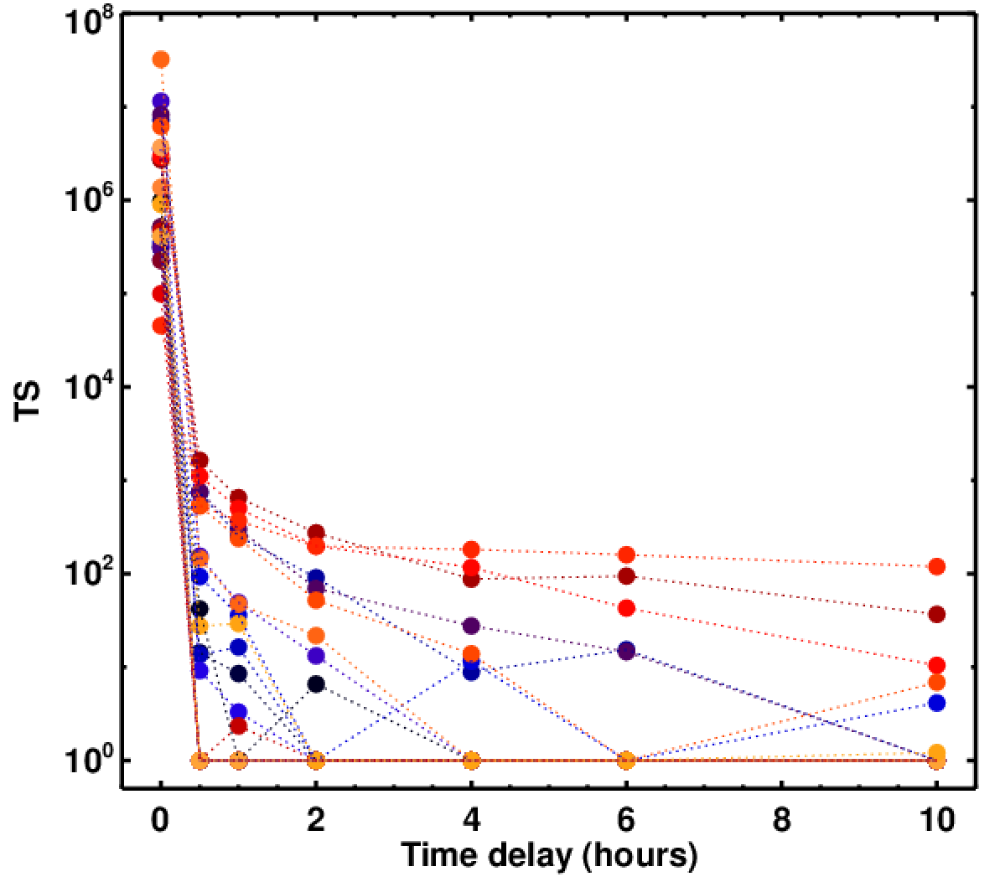
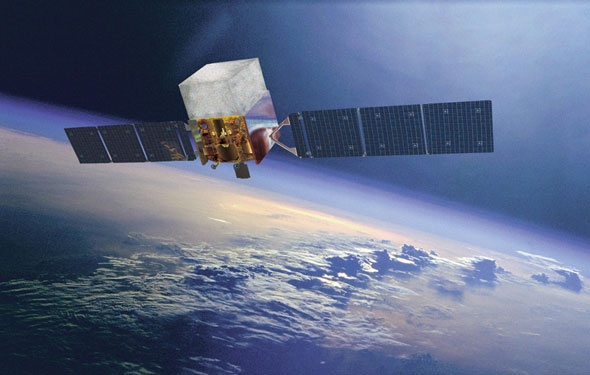
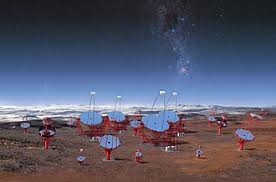

2019
Fermi-LAT Collaboration — A Decade of Gamma-Ray Bursts Observed by Fermi-LAT: The Second LAT GRB Catalog
Contribution to the study of prospects for very-high-energy GRB detections with CTA.
From Fermi-LAT observations to CTA simulations: studying whether gamma-ray bursts detected at GeV energies could also be observed at very-high energies, and how rapidly CTA needs to react.

As part of the second Fermi-LAT GRB catalog, I worked on assessing the detectability of Fermi-LAT gamma-ray bursts with the Cherenkov Telescope Array (CTA). LAT observations of long GRBs with measured redshift were used to characterize their high-energy spectra and provide realistic inputs for CTA simulations.
I performed CTA simulations using the GRB position, spectral parameters and temporal decay measured by Fermi-LAT. The study explored the very-high-energy domain from 50 GeV to 50 TeV and tested different spectral assumptions, including power-law and cut-off power-law models accounting for attenuation by the extragalactic background light.
A key part of the analysis was to evaluate how the delay between the GRB detection and the start of CTA observations affects source detectability. Several alert delays, from immediate follow-up to several hours, were simulated and the resulting CTA Test Statistic was used to quantify the detection significance.
Contribution to the study of prospects for very-high-energy GRB detections with CTA.

